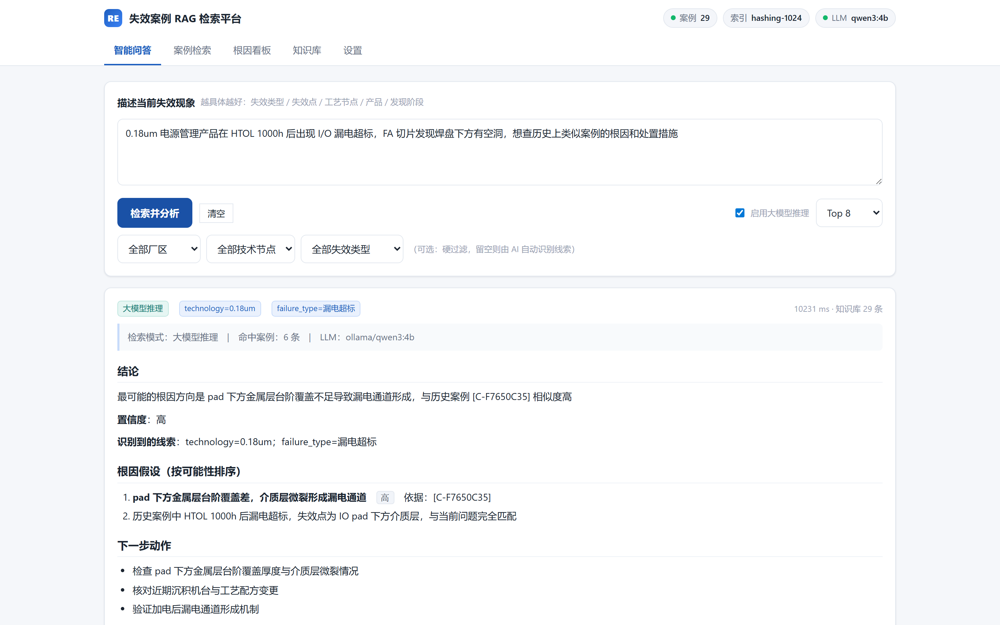
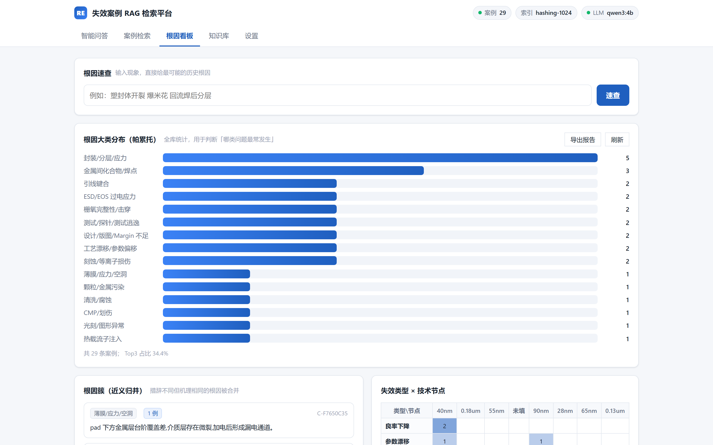

运行实拍 · 单机离线
失效案例智能检索
工程师用一句话描述异常现象，系统从历史案例库里找出相似案例，给出按可能性排序的根因假设和下一步排查动作，每条结论都标注出自哪个案例。模型、索引和数据全部在本机。


它解决什么问题
经验留在组织里8D 报告和异常案例通常散在个人电脑和邮件里。入库之后，新人也能查到三年前同类问题是怎么定位的。
导入不挑格式Excel 按行解析成结构化案例，PDF 和 Word 报告按段入库。表头自动识别，认不出的列会列出来等人确认，不会静默丢弃。
内网可用不连外网，小模型在普通工作站上就能跑。拷贝文件夹、双击启动，不需要改动现有系统。
截图来自本机运行的原型。库中 29 条案例为完全虚构的样例数据，厂区、客户和产品名均为占位符，仅用于展示界面和输出形态；接入真实案例后的检索效果需要用实际数据验证。